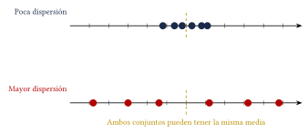

Capítulo 46
Medidas estadísticas
IPN CENEVAL
Las medidas estadísticas resumen un conjunto de datos mediante valores numéricos.
Se clasifican principalmente en:
- medidas de tendencia central, que indican dónde se concentran los datos;
- medidas de dispersión, que indican qué tan separados se encuentran los datos;
- medidas de posición, que dividen un conjunto ordenado en partes.
46.1 Medidas de tendencia central#
Las medidas de tendencia central más utilizadas son:
- media;
- mediana;
- moda.
46.1.1 Media aritmética#
La media aritmética o promedio de \(n\) datos es:
También puede escribirse como:
46.1.2 Mediana#
La mediana es el valor central de un conjunto ordenado.
Si \(n\) es impar, la mediana es el dato que ocupa la posición:
Si \(n\) es par, la mediana es el promedio de los datos que ocupan las posiciones:
y:
46.1.3 Moda#
La moda es el valor que aparece con mayor frecuencia.
Un conjunto puede ser:
- unimodal: tiene una moda;
- bimodal: tiene dos modas;
- multimodal: tiene varias modas;
- amodal: ningún valor se repite más que los demás.
| Medida | Idea principal | Considera |
|---|---|---|
| Media | Promedio | Todos los valores |
| Mediana | Valor central | El orden de los datos |
| Moda | Valor más frecuente | Las repeticiones |
Los datos deben ordenarse antes de calcular la mediana.
No es necesario ordenar los datos para calcular la media.
Calcula la media, la mediana y la moda del conjunto:
Ver solución
La suma es:
Como:
la media es:
Ordenamos los datos:
Como \(n\) es par, tomamos los dos valores centrales:
La mediana es:
El valor que más veces aparece es:
Por tanto:
Las calificaciones de cinco materias son:
Calcula el promedio.
Ver solución
Por tanto:
46.2 Media, mediana y valores extremos#
La media utiliza todos los datos, por lo que puede cambiar considerablemente cuando existe un valor extremo.
La mediana depende de la posición de los datos y suele ser menos sensible a valores muy grandes o muy pequeños.
Compara la media y la mediana de:
Ver solución
La media es:
La mediana es el dato central:
El valor \(30\) eleva considerablemente la media, pero no modifica la posición central.
Cuando existen valores extremos, la mediana puede representar mejor el centro de los datos que la media.
46.3 Media ponderada#
Cuando los datos tienen diferente importancia o peso, se utiliza la media ponderada:
También puede escribirse como:
La calificación final de un curso se obtiene de la siguiente forma:
| Actividad | Calificación | Peso |
|---|---|---|
| Examen | 8 | 50% |
| Proyecto | 9 | 30% |
| Tareas | 10 | 20% |
Calcula la calificación final.
Ver solución
Convertimos los porcentajes a decimales:
Calculamos:
Por tanto:
46.4 Media en una tabla de frecuencias#
Si cada valor \(x_i\) aparece \(f_i\) veces, la media es:
Como:
también puede escribirse:
Calcula la media de los siguientes datos:
| \(x_i\) | \(f_i\) | \(f_ix_i\) |
|---|---|---|
| 5 | 2 | 10 |
| 7 | 5 | 35 |
| 9 | 8 | 72 |
| 10 | 3 | 30 |
| Total | 18 | 147 |
Ver solución
Por tanto:
Para datos agrupados en intervalos, se utiliza la marca de clase como valor representativo de cada intervalo.
La media obtenida en ese caso es una aproximación.
46.5 Medidas de dispersión#
Dos conjuntos pueden tener la misma media y presentar una dispersión muy diferente.
Las principales medidas de dispersión son:
- rango;
- varianza;
- desviación estándar;
- coeficiente de variación.
46.5.1 Rango#
El rango es la diferencia entre el valor máximo y el mínimo:
El rango es fácil de calcular, pero solo utiliza dos datos.
46.5.2 Varianza poblacional#
Si los datos forman una población completa, la varianza es:
donde:
es la media poblacional y \(N\) es el tamaño de la población.
46.5.3 Varianza muestral#
Si los datos forman una muestra, la varianza muestral es:
46.5.4 Desviación estándar#
La desviación estándar es la raíz cuadrada de la varianza:
para una población, y:
para una muestra.
| Medida | Símbolo poblacional | Símbolo muestral |
|---|---|---|
| Media | \(\mu\) | \(\bar{x}\) |
| Varianza | \(\sigma^2\) | \(s^2\) |
| Desviación estándar | \(\sigma\) | \(s\) |
La varianza se expresa en unidades al cuadrado.
La desviación estándar tiene las mismas unidades que los datos, por lo que es más fácil de interpretar.
46.6 Cálculo de la varianza#
Para calcular la varianza poblacional:
- calcula la media;
- resta la media a cada dato;
- eleva cada diferencia al cuadrado;
- suma los cuadrados;
- divide entre el número de datos.
Calcula el rango, la varianza poblacional y la desviación estándar de:
Ver solución
La media es:
El rango es:
Construimos la tabla:
| \(x_i\) | \(x_i-\mu\) | \((x_i-\mu)^2\) |
|---|---|---|
| 2 | \(-4\) | 16 |
| 4 | \(-2\) | 4 |
| 6 | 0 | 0 |
| 8 | 2 | 4 |
| 10 | 4 | 16 |
| 40 |
La varianza poblacional es:
La desviación estándar es:
Aproximadamente:
Calcula la varianza poblacional y la desviación estándar de:
Ver solución
La media es:
Las desviaciones al cuadrado son:
La suma es:
Por tanto:
La desviación estándar es:
No deben sumarse las desviaciones simples:
porque su suma siempre es cero.
Por ello, la varianza utiliza:
46.7 Interpretación de la dispersión#
Una desviación estándar pequeña indica que los datos se concentran cerca de la media.
Una desviación estándar grande indica que los datos se encuentran más separados.

46.8 Coeficiente de variación#
El coeficiente de variación mide la dispersión en relación con la media.
Para una población:
Para una muestra:
El coeficiente de variación es útil para comparar conjuntos con medias o unidades diferentes.
No suele utilizarse cuando la media es cero o muy cercana a cero.
En un grupo, la estatura media es:
con desviación estándar:
En otro grupo, el peso medio es:
con desviación estándar:
Determina cuál presenta mayor dispersión relativa.
Ver solución
Para la estatura:
Para el peso:
El peso presenta mayor dispersión relativa.
46.9 Medidas de posición#
Las medidas de posición dividen un conjunto ordenado en partes.
46.9.1 Cuartiles#
Los cuartiles dividen los datos en cuatro partes.
- \(Q_1\): deja aproximadamente el \(25\%\) de los datos por debajo;
- \(Q_2\): deja aproximadamente el \(50\%\) por debajo y coincide con la mediana;
- \(Q_3\): deja aproximadamente el \(75\%\) por debajo.
46.9.2 Deciles#
Los deciles dividen los datos en diez partes:
46.9.3 Percentiles#
Los percentiles dividen los datos en cien partes:
El percentil \(P_k\) es un valor que deja aproximadamente al \(k\%\) de los datos por debajo o igual a él.
Calcula \(Q_1\), \(Q_2\) y \(Q_3\) del conjunto:
Ver solución
Los datos ya se encuentran ordenados.
Como:
la mediana es el sexto dato:
La mitad inferior, sin incluir la mediana, es:
Su valor central es:
La mitad superior es:
Su valor central es:
Existen diferentes convenciones para calcular cuartiles y percentiles.
En esta guía, cuando el número de datos es impar, se excluye la mediana al formar las mitades inferior y superior.
46.10 Rango intercuartílico#
El rango intercuartílico mide la dispersión del \(50\%\) central de los datos.
Se calcula mediante:
Para el conjunto anterior:
y:
Por tanto:
El rango intercuartílico es menos sensible a valores extremos que el rango total.
46.11 ¿Qué medida conviene utilizar?#
| Situación | Medida útil |
|---|---|
| Datos sin valores extremos | Media |
| Datos con valores extremos | Mediana |
| Categoría o valor más frecuente | Moda |
| Diferencia entre máximo y mínimo | Rango |
| Dispersión respecto de la media | Desviación estándar |
| Comparar dispersión relativa | Coeficiente de variación |
| Dispersión del centro de los datos | Rango intercuartílico |
46.12 Procedimiento rápido#
Media#
- Suma todos los datos.
- Divide entre el número de datos.
Mediana#
- Ordena los datos.
- Localiza el centro.
- Si hay dos datos centrales, calcula su promedio.
Moda#
- Cuenta las repeticiones.
- Identifica la frecuencia mayor.
Varianza poblacional#
- Calcula la media.
- Obtén cada diferencia: \[x_i-\mu.\]
- Eleva las diferencias al cuadrado.
- Suma los cuadrados.
- Divide entre \(N\).
Desviación estándar#
- Calcula la varianza.
- Obtén su raíz cuadrada.
46.13 Resumen#
Media:
Media con frecuencias:
Media ponderada:
Rango:
Varianza poblacional:
Varianza muestral:
Desviación estándar:
Coeficiente de variación:
Rango intercuartílico:
46.14 Errores frecuentes#
Recuerda:
- Los datos deben ordenarse antes de calcular la mediana o los cuartiles.
- La media se obtiene dividiendo entre el número total de datos.
- La moda es el valor más frecuente, no la frecuencia.
- Un conjunto puede tener más de una moda.
- El rango solo utiliza el máximo y el mínimo.
- La varianza utiliza desviaciones al cuadrado.
- La varianza poblacional divide entre: \[N.\]
- La varianza muestral divide entre: \[n-1.\]
- La desviación estándar es la raíz cuadrada de la varianza.
- La desviación estándar tiene las mismas unidades que los datos.
- El coeficiente de variación se expresa generalmente como porcentaje.
- Debe indicarse la convención utilizada para calcular cuartiles.
- No debe redondearse demasiado pronto durante los cálculos.
46.15 Ejercicios propuestos#
Calcula la media, la mediana y la moda de:
Ver solución
Suma = \(5+7+7+8+9+10+12 = 58\). Media = \(58 / 7 \approx 8.29\). Mediana = \(8\) (valor central). Moda = \(7\) (se repite \(2\) veces).
Calcula la media, la mediana y la moda de:
Ver solución
Suma = \(2+4+4+4+6+8+10+12 = 50\). Media = \(50 / 8 = 6.25\). Mediana = \((4+6) / 2 = 5\). Moda = \(4\) (se repite \(3\) veces).
Las calificaciones de seis materias son:
Calcula el promedio.
Ver solución
\(\bar{x} = \frac{7+8+6+9+10+8}{6} = \frac{48}{6} = 8\).
La calificación final se obtiene con los siguientes datos:
| Actividad | Calificación | Peso |
|---|---|---|
| Examen | 8 | 60% |
| Proyecto | 9 | 25% |
| Tareas | 10 | 15% |
Calcula la media ponderada.
Ver solución
\(\bar{x}_p = 8(0.60) + 9(0.25) + 10(0.15) = 4.8 + 2.25 + 1.5 = 8.55\).
En un grupo de \(40\) estudiantes, la media de calificaciones es:
Treinta estudiantes tienen una media de:
Los diez restantes tienen la misma media \(x\).
Calcula \(x\).
Ver solución
\(40(8.2) = 30(8) + 10x \Rightarrow 328 = 240 + 10x \Rightarrow 88 = 10x \Rightarrow x = 8.8\).
Calcula el rango, la varianza poblacional y la desviación estándar de:
Ver solución
Rango \(R = 12 - 4 = 8\). Media \(\mu = 8\). Desviaciones: \(-4, -2, 0, 2, 4\). Sus cuadrados: \(16, 4, 0, 4, 16\). Suma de cuadrados \(= 40\). Varianza \(\sigma^2 = \frac{40}{5} = 8\). Desviación estándar \(\sigma = \sqrt{8} \approx 2.83\).
Calcula la varianza poblacional y la desviación estándar de:
Ver solución
Media \(\mu = 3\). Desviaciones al cuadrado: \(4, 1, 0, 1, 4\). Suma \(= 10\). Varianza \(\sigma^2 = \frac{10}{5} = 2\). Desviación estándar \(\sigma = \sqrt{2} \approx 1.41\).
Considera la muestra:
Calcula la varianza muestral y la desviación estándar muestral.
Ver solución
Media \(\bar{x} = 6\). Desviaciones al cuadrado: \(9, 1, 1, 9\). Suma \(= 20\). Como es muestra, dividimos entre \(n-1 = 3\). Varianza muestral \(s^2 = \frac{20}{3} \approx 6.67\). Desviación estándar muestral \(s = \sqrt{\frac{20}{3}} \approx 2.58\).
En una empresa, el salario medio es:
y la desviación estándar es:
Calcula el coeficiente de variación.
Ver solución
\(CV = \left(\frac{1500}{12000}\right) 100\% = 12.5\%\).
Dos grupos presentan los siguientes resultados:
Determina cuál grupo tiene mayor dispersión relativa.
Ver solución
Grupo A: \(CV = \left(\frac{1.2}{7.5}\right) 100\% = 16\%\). Grupo B: \(CV = \left(\frac{1.5}{6.8}\right) 100\% \approx 22.06\%\). El Grupo B tiene mayor dispersión relativa.
Calcula \(Q_1\), \(Q_2\), \(Q_3\) y el rango intercuartílico de:
Ver solución
\(n = 11\). La mediana es el dato en la posición \(6\), por lo que \(Q_2 = 10\). La mitad inferior es \(\{2, 3, 5, 7, 8\}\), cuya mediana es \(Q_1 = 5\). La mitad superior es \(\{12, 15, 16, 18, 20\}\), cuya mediana es \(Q_3 = 16\). Rango intercuartílico \(RI = Q_3 - Q_1 = 16 - 5 = 11\).
La siguiente tabla muestra las edades de un grupo:
| Edad \(x_i\) | \(f_i\) |
|---|---|
| 15 | 3 |
| 16 | 5 |
| 17 | 4 |
| 18 | 3 |
| Total | 15 |
Calcula la media y la desviación estándar poblacional.
Ver solución
\(n=15\). Suma total \(= 15(3) + 16(5) + 17(4) + 18(3) = 45 + 80 + 68 + 54 = 247\). Media \(\mu = 247/15 \approx 16.47\). Suma de desviaciones cuadradas \(\sum f_i(x_i - \mu)^2 = 3(15 - 16.47)^2 + 5(16 - 16.47)^2 + 4(17 - 16.47)^2 + 3(18 - 16.47)^2 \approx 15.733\). Varianza \(\sigma^2 \approx \frac{15.733}{15} \approx 1.049\). Desviación estándar \(\sigma \approx \sqrt{1.049} \approx 1.02\).
Los siguientes conjuntos tienen la misma media:
Sin calcular primero la varianza, indica cuál tiene mayor dispersión. Después verifica tu respuesta calculando las desviaciones estándar.
Ver solución
El conjunto B tiene mayor dispersión, pues sus datos están más alejados de la media (\(10\)). Para A: desviaciones al cuadrado: \(4, 1, 0, 1, 4\). Varianza \(= \frac{10}{5} = 2 \Rightarrow \sigma_A = \sqrt{2} \approx 1.41\). Para B: desviaciones al cuadrado: \(64, 16, 0, 16, 64\). Varianza \(= \frac{160}{5} = 32 \Rightarrow \sigma_B = \sqrt{32} \approx 5.66\).